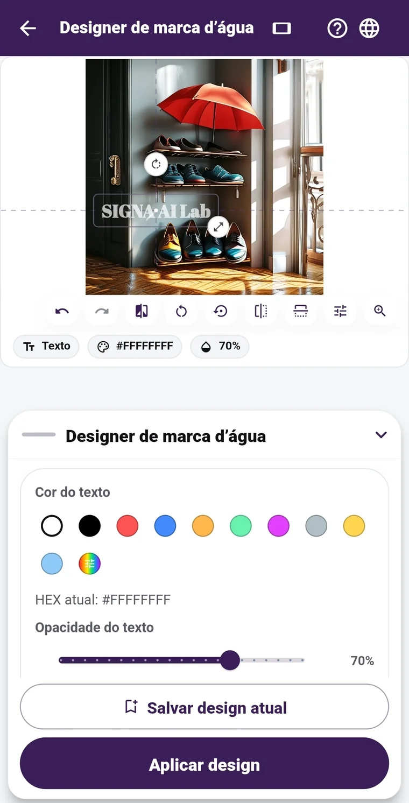

01 · PROTECT
A marca d’água entra na foto
sem atrapalhar a composição.
O editor se ajusta a fotos na vertical e na horizontal. Você escolhe fonte, cor, tamanho, transparência e posição do texto ou logo. Os recursos básicos são grátis: edite até 12 fotos por vez, posicione a marca em cada uma e salve seus modelos para usar novamente. Com Pro, há mais fontes disponíveis para baixar. O sinal SIGNA invisível só entra junto com a marca visível quando você ativa essa opção.
Recursos básicos grátis · Fotos na vertical ou horizontal · Até 12 por vez · Ajuste em cada foto · Modelos salvos · Fontes extras no Pro
Como escolher a marca d’água antes de compartilhar? →